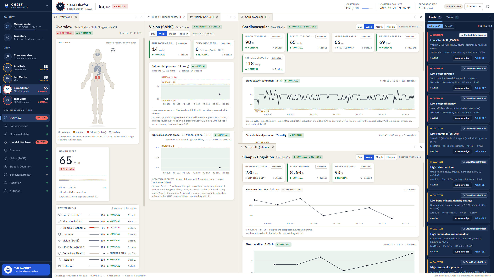
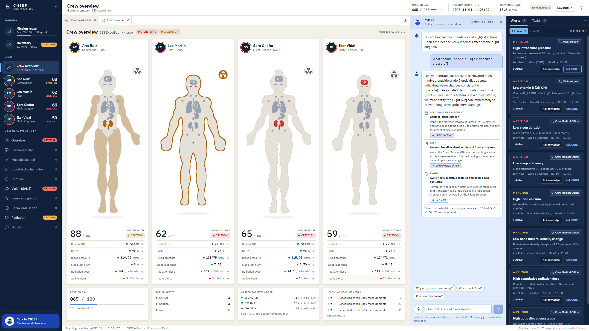
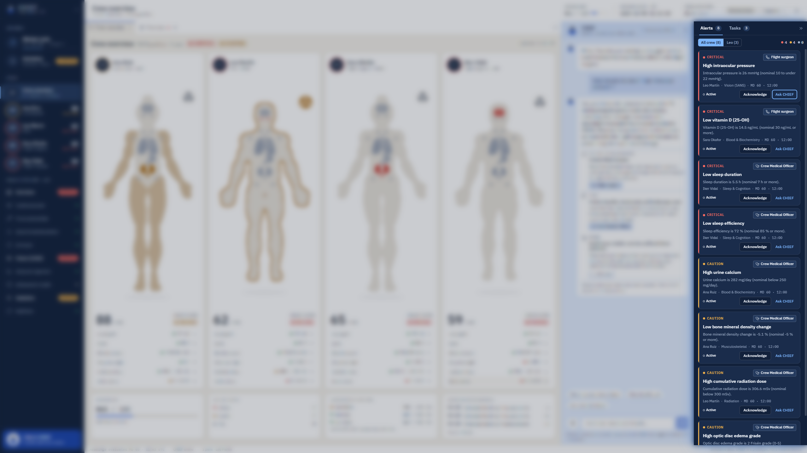
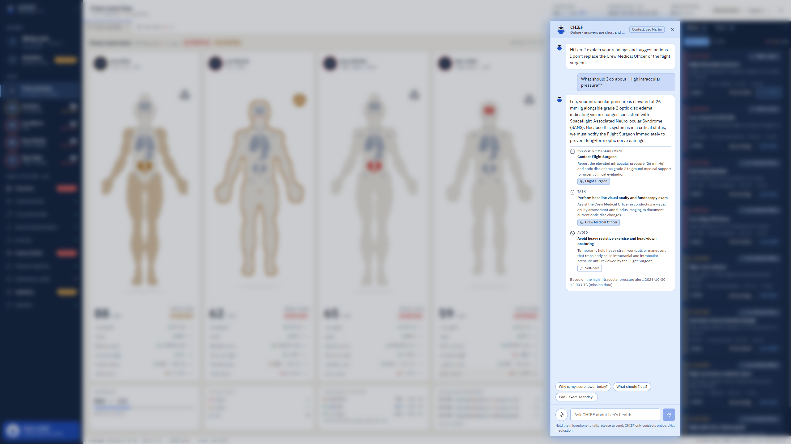
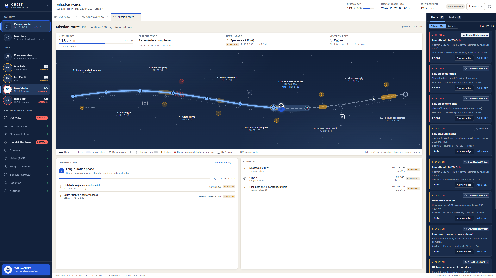
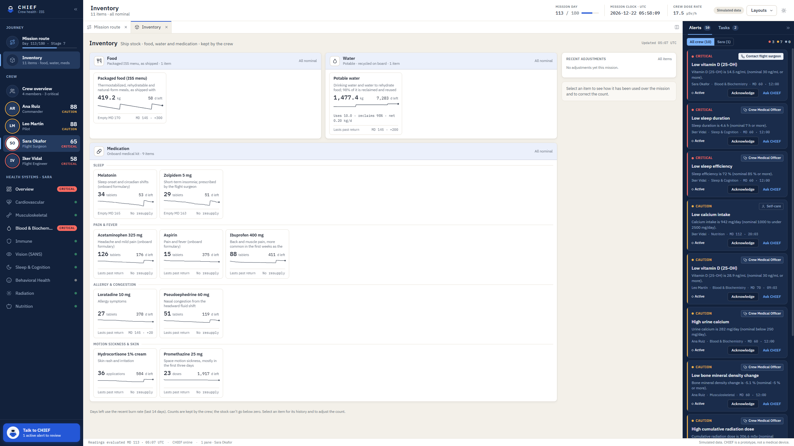
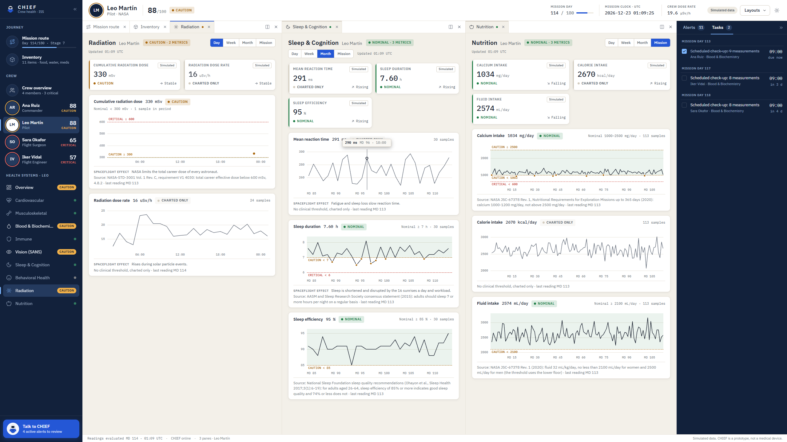
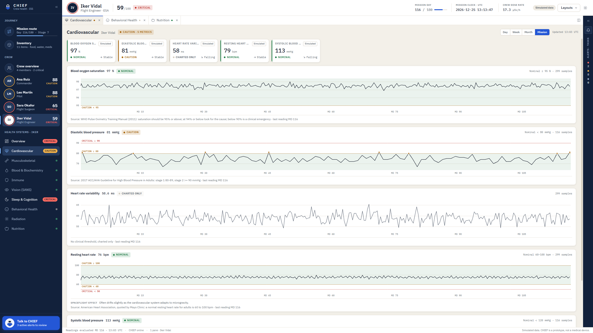
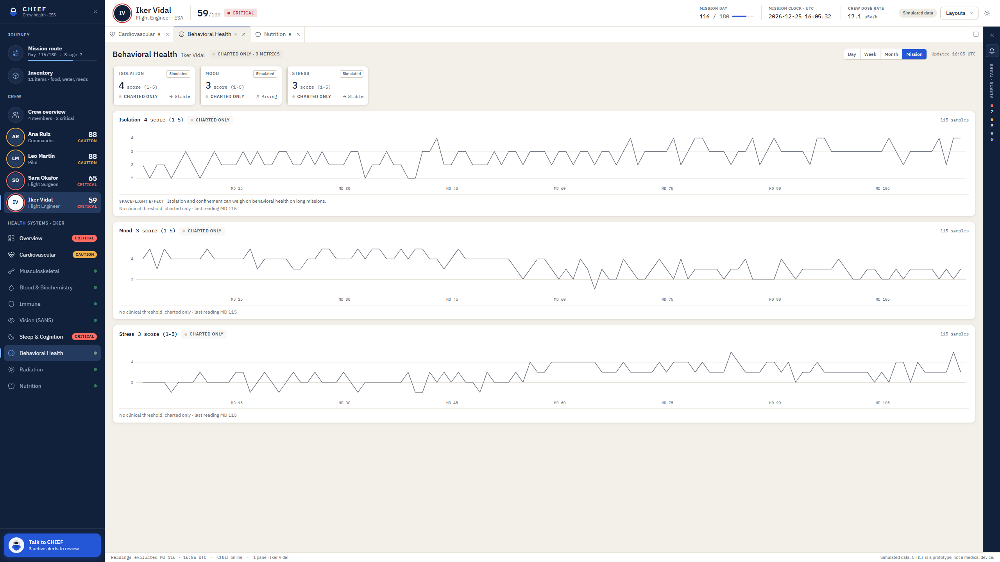
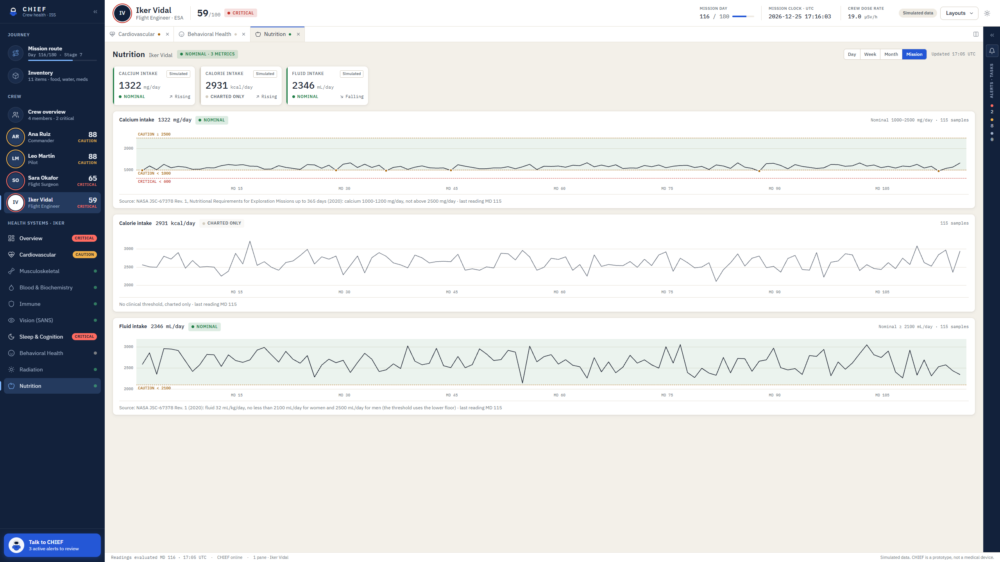

CHIEF — video storyboard
An animatic of the 30-second video, timed to the final voice-over: the lonely ship, a beam
of light that turns the screen white on "Until now!", then CHIEF (from the
animator) over the app screenshots of
video/screenshots, in their numbered order, as it describes each feature.










Press Play: the voice-over and CHIEF's timeline start together; Pause keeps the place and Play goes on from there (Restart, or R, starts over; a scene on the timeline jumps to it). Voice-over off: the same 30.6 s without sound, to screen-record the stage in full screen. Subtitles can be turned off for a clean recording. The music and sound effects are synthesised in the page and follow the scenes (🎵 turns them off).
Voice-over
Scene by scene
Production
Voices
-
Voice-over:
../chief-animator/voiceover.mp3(30.6 s), one voice from the opening line to the end. - CHIEF: the animator's timeline is synced to the same file. Record it there with Record WebM (transparent) and lay it over the screen recording.
App screenshots
-
video/screenshots/image1.pngtoimage9.png, shown as CHIEF describes each feature (image9 right after image1). - 1: dashboards with thresholds and sources · 9: crew overview, alerts and CHIEF’s answer (image2 is not used).
- 3: mission route · 4: inventory · 5–8: body systems, quick cuts.
Animation and edit
- Ship: Blender or Spline (NASA 3D Resources has free ISS models).
-
CHIEF: the animator (
video/chief-animator); its timeline holds CHIEF's positions over each screenshot. Record WebM exports it with a transparent background. - Cuts land on the music beats; whoosh on every transition; one heartbeat beep as the sound motif.
- Burned-in subtitles: many judges watch muted.
Marketing rules used
- Hook in 3 s: a shocking number (0 doctors on board) and an emotion (loneliness).
- Problem → hero → proof: every claim is shown on the real app.
- A character: a mascot is remembered far better than a logo.
- Concrete over adjectives: 400 km, 9 systems, 36 days of meds.
- Bookend: the last shot repeats the first, now not alone. One line to remember.
- Honesty: no NASA logo or insignia; say "simulated crew data" in the submission text.